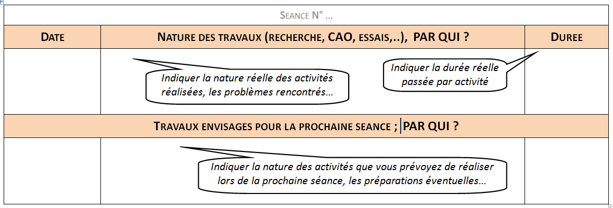

CONSEILS POUR LE TRAVAIL A EFFECTUER
Le projet est réalisé en 36 heures.
Pour aider à la réalisation du projet, ces 12 heures ont été détaillées dans le chapitre "organisation temporelle du sujet".
Au chapitre ressources, vous trouverez des documents, des tutoriels pour vous aider.
A ce chapitre, on vous donne aussi des pistes de réflexion: en effet, ces documents sont surtout donnés pour vous aider à avancer, mais ils ne sont pas LA solution au problème posé. Il faudra vous appuyer sur les connaissances que ces chapitres vous apportent pour les transposer à VOTRE problématique.
A la fin du projet, il vous est demandé une synthèse qui aboutira à une présentation orale (diaporama).
Il est donc fortement conseillé de prendre des notes tout au long du projet (notes au traitement de texte, vous serez contents de ne pas avoir à les saisir.
Tenez à jour un petit journal ou tableau de bord qui vous évitera des questions du genre "QUI devait s'occuper de ça?" ou du type: "on en est où déjà?".
Ce tableau de bord pourra être du type:

Vous veillerez aussi à faire des copies d'écran de vos expérimentations, vous pourrez également filmer certains résultats.
Il est fortement conseillé de multiplier les lieux de sauvegarde; une clé USB qui passe à la machine à laver dans une poche, ça arrive; les documents sur la session du copain absent peuvent vous bloquer...
Pour cela, une plate forme coopérative avec sauvegarde sur le Cloud semble un bonne solution, vous pourrez ainsi avoir vos documents à disposition facilement (même de chez vous).
Créé avec HelpNDoc Personal Edition: Générateur gratuit de livres électroniques et documentation